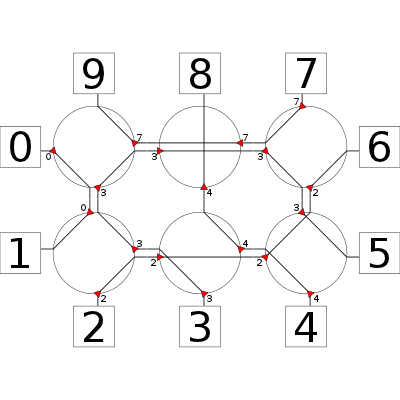

> module FragRoute where
Modelling Language: Solve.lhs
This is a literal haskell file. Just copy it into a file named FragRoute.lhs, and you are ready to use the code.
As always, we start with some basic imports:
> import Data.Maybe
> import Data.List
> import Data.Array
The NOC of the TTSoC is a regular M x N mesh, with cores connected on all four sides. The mesh is composed of fragment switches, which have inputs and outputs in all four directions.
> data Dir = N | W | S | E deriving (Eq,Ord,Show,Read,Enum,Bounded)
> toRad :: Dir -> Double
> toRad dir = pi / 2 * (fromIntegral (fromEnum dir)) + pi/2
Here is a picture of a 3 x 2 mesh, with routes connecting a few of the cores:
A fragment switch assigns each input to one output. This mapping has to be bijective, i.e., no two inputs are allowed to map to the same output. In our model, we also allow inputs to be inactive. In this case, the input is not used, and the output direction for this input is irrelevant.
A switch is identified by its row and its column
> type Switch = (Int,Int)
For simplicity, we model the configuration of one switch as a list of input/output direction pairs.
> type SwitchConfig = [(Dir,Dir)]
One configuration assigns connections to each fragment switch.
> type MeshConfig = Array Switch SwitchConfig
The dimension of a mesh is the number columns and rows.
> type Dim = (Int,Int)
> dimensions :: MeshConfig -> Dim
> dimensions meshArray = (\(x,y) -> (x+1,y+1)) $ snd (bounds meshArray)
> meshBounds :: (Int,Int) -> ((Int,Int),(Int,Int))
> meshBounds (cols,rows) = ((0,0),(cols-1,rows-1))
One of the simplest configurations for a NxM mesh just connects neighbours from east and west, and from north and south in each switch:
> gridConfig :: (Int,Int) -> MeshConfig
> gridConfig dim = array (meshBounds dim)
> [ ( pos , [(N,S),(S,N),(W,E),(E,W)] ) | pos <- range (meshBounds dim) ]
The configuration of a switch is valid if the list of inputs and outputs is unique, and no route maps the input to itself.
> validSwitchConfig :: [(Dir,Dir)] -> Bool
> validSwitchConfig config = let (ins,outs) = unzip config
> in noneRepeated ins && noneRepeated outs && all (uncurry (/=)) config
> where noneRepeated xs = xs == nub xs
> validConfig :: MeshConfig -> Bool
> validConfig mesh = all validSwitchConfig (elems mesh)
Cores are connected to the NoC at all four sides.
> type Core = (Switch,Dir)
Each core has a unique integer identifying it. Core 1 is attached at the west of the switch in the first row and column, the other cores get increasing numbers in clockwise order. We do not use the id 0, as it will denote an inactive port in the formal model.
> numberOfCores :: Dim -> Int
> numberOfCores (cols,rows) = 2 * cols + 2 * rows
> toCoreId :: Dim -> Core -> Integer
> toCoreId (cols,rows) (s,dir) = fromIntegral $ succ $
> case dir of
> W -> snd s
> S -> fst s + rows
> E -> (rows - snd s - 1) + cols + rows
> N -> (cols - fst s - 1) + 2 * rows + cols
> fromCoreId :: Dim -> Integer -> Maybe Core
> fromCoreId dim 0 = Nothing
> fromCoreId (cols,rows) n = select (fromIntegral n-1) [(W,rows),(S,cols),(E,rows),(N,cols)]
> where
> select offs [] = Nothing
> select offs ( (dir,count) : rest ) | offs < count = Just (core dir offs)
> | otherwise = select (offs-count) rest
> core W row = ( (0 , row ), W )
> core S col = ( (col , rows-1 ), S )
> core E row = ( (cols-1 , rows-row-1), E )
> core N col = ( (cols-col-1, 0 ), N )
The following function produces a cores, or equivalently, switches paired with the direction where one core is attached to the switch of switches, and the side where the core is attached to the switch.
> attachedCores :: Dim -> [Core]
> attachedCores dim = map (fromJust . fromCoreId dim) [1 .. toInteger (numberOfCores dim) ]
The neighbour of a switch for a given output direction is given by the following equations:
> neighbour :: Switch -> Dir -> (Switch,Dir)
> neighbour (x,y) dir = case dir of
> N -> ( (x, y-1), S )
> W -> ( (x-1,y ), E )
> S -> ( (x, y+1), N )
> E -> ( (x+1,y ), W )
> meshNeighbour :: ((Int,Int),(Int,Int)) -> Switch -> Dir -> Maybe (Switch, Dir)
> meshNeighbour bounds switch dir
> | inRange bounds switch' = Just next
> | otherwise = Nothing
> where next@(switch',_) = neighbour switch dir
To find all possible routes for a given, valid configuration of a mesh, we follow the routes starting from each core.
> routes :: MeshConfig -> [ ( (Core,Core) , [Switch] ) ]
> routes mesh = mapMaybe startRoute (attachedCores (dimensions mesh))
> where
> startRoute core = buildRoute core [] core
> buildRoute start route (switch,dir) =
> case lookup dir (mesh ! switch) of
> Nothing -> Nothing
> Just outDir ->
> case meshNeighbour (bounds mesh) switch outDir of
> Just next -> buildRoute start (switch:route) next
> Nothing -> Just $ ( (start,(switch,outDir)) , reverse (switch:route) )
To pragmatic goal of playing around with fragment switches is to an optimal set of routes for a fairly small (3x2) NoC actually in use in the TTSoC architecture. To this end, we will formulate an SAT/ILP problem. The input space will consist of integer variables of type PortVar; for the full solver implementation, continue with FragOpt.lhs.
> data PortVar = PortVar { var_phase :: Int, var_switch :: Switch, var_input :: Bool, var_dir :: Dir }
> deriving (Eq,Ord,Show,Read)
Finally, we also want to illustrate meshes and routes programatically, using the fabolous diagrams package. If you are interested in the drawing stuff, have a look at FragDraw.lhs.